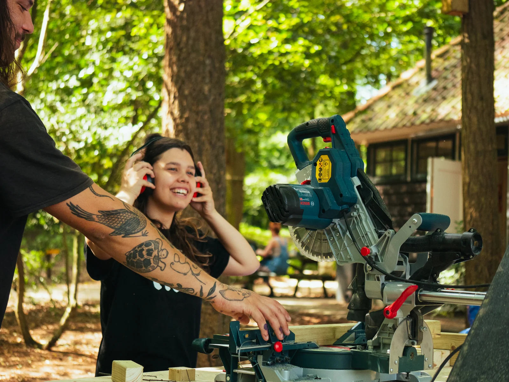
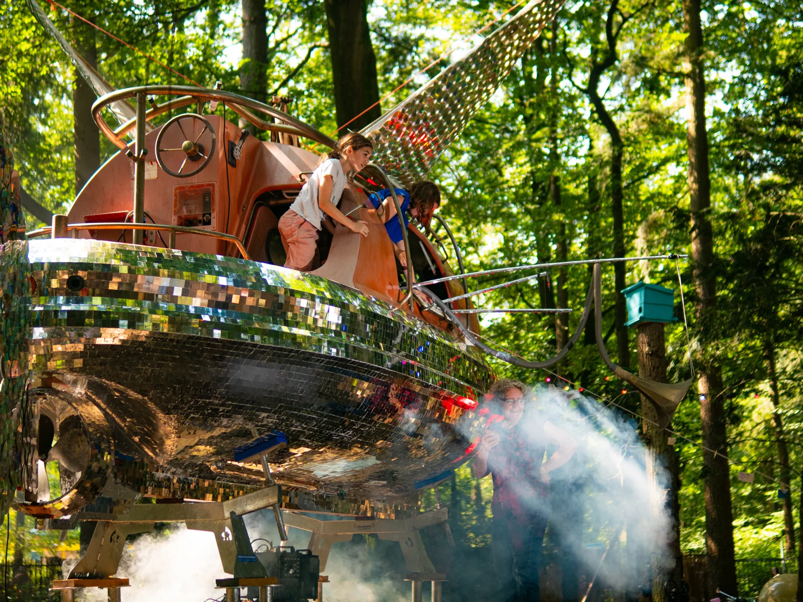

PROJECT / Social innovation
Future Village
Following a pilot with one artwork, I built the full delivery structure for Future Village: a cultural and social programme where young people create large art installations with professional artists.
- Client / partner
- Kultlab / Stichting Mooie Dingen
- My role
- Project lead – development and delivery
- Period
- 2025–present

FUTUREVILLAGE

The starting point
Following a pilot with one artwork, a new project plan was ready. Delivery still needed to be built from the ground up.
My contribution
I held overall project responsibility, with a marketer and intern as the core team. From the foundation and legal framework to artists, materials, website, registration system and safety. I brought divergent interests together and combined strategy with day-to-day delivery.
The scale
Responsibility for a budget of approximately €600,000, 1,500 festival visitors and five art installations. In 2026, 203 individual young people participated.
Social outcomes
Impact House – Grant Thornton describes pride in participants’ own work, learning creative and technical skills, and a safe environment. Young people experience a temporary but meaningful sense of community. The report also identifies opportunities for greater youth influence and more lasting connections.
Impact House – Grant Thornton
Read the impact report
Impact House – Grant Thornton · 13 January 2026 · PDF · 43 pages · 10 MB · Dutch
Based on 44 interviews, observations and creative research activities. The study describes experiences during the programme; longer-term effects were not established.